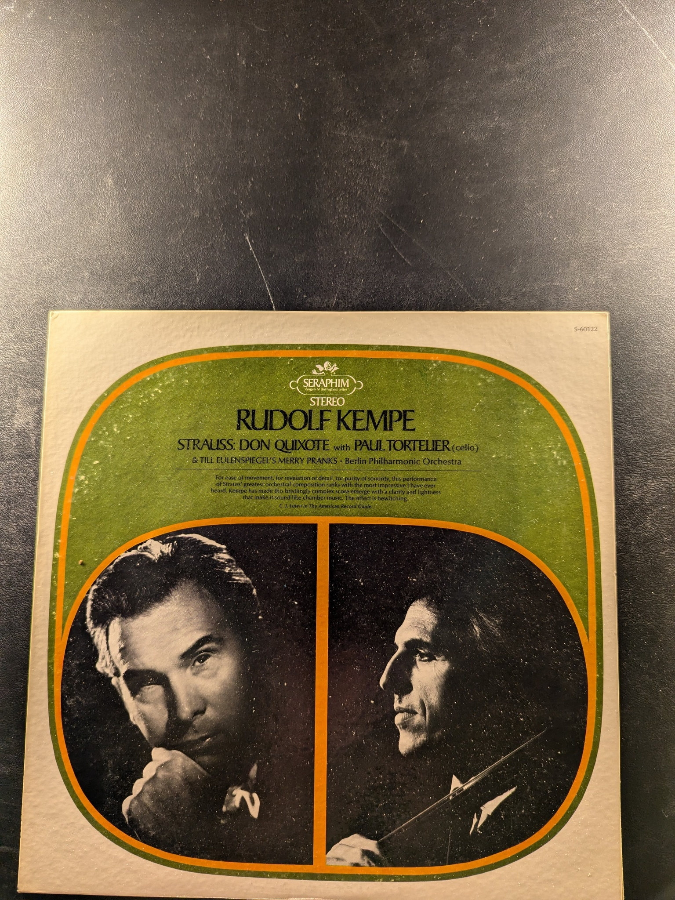Strauss: Don Quixote
Rudolf Kempe
Seraphim S-60122
Bruckner: Symphony No. 7 in A Major / Wagner: Siegfried Idyll
Georg Solti
London CMA 7216
European Masters of the Classical Guitar
Siegfried Behrend
Musical Heritage Society MHS 3412
Sinfonia, BWV 1046 / Cantata Sinfonie
Johann Sebastian Bach
Nonesuch H-71129

1962-1966
The Beatles
Les Fastes de la Grande et Ancienne Ménestrandise / Les Folies Françaises / Pièces de Clavecin
François Couperin
Nonesuch H-71057
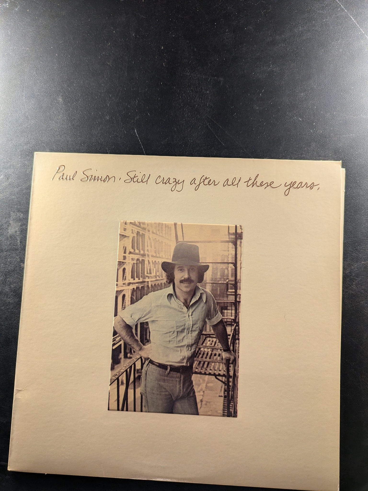Still Crazy After All These Years
Paul Simon
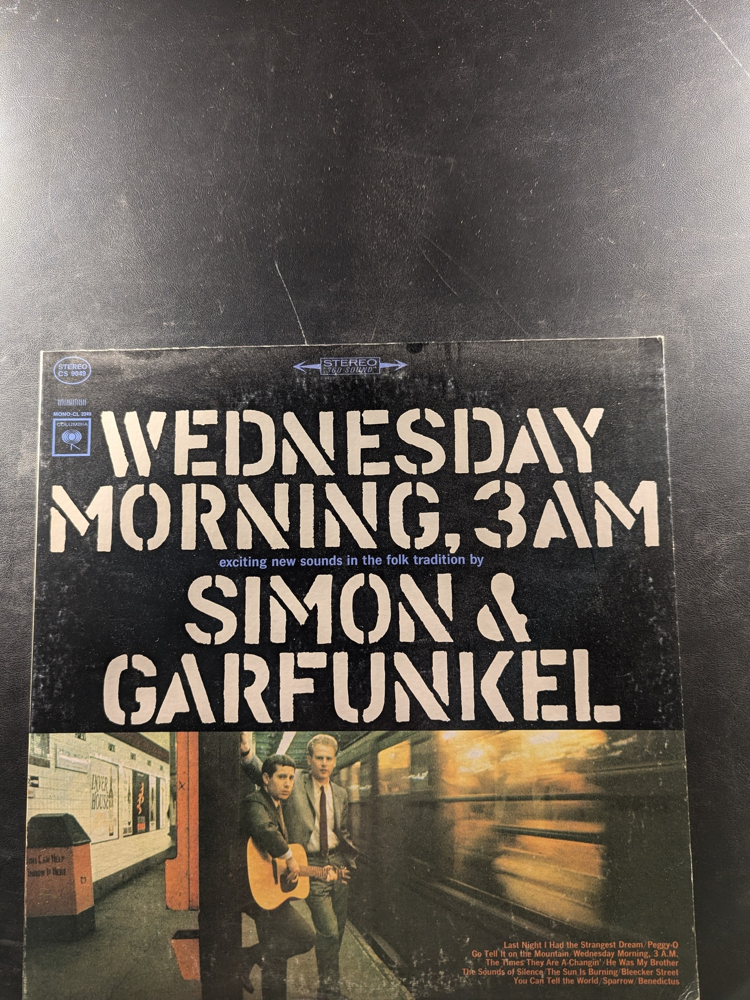Wednesday Morning, 3 A.M.
Simon & Garfunkel
Columbia CS 9049
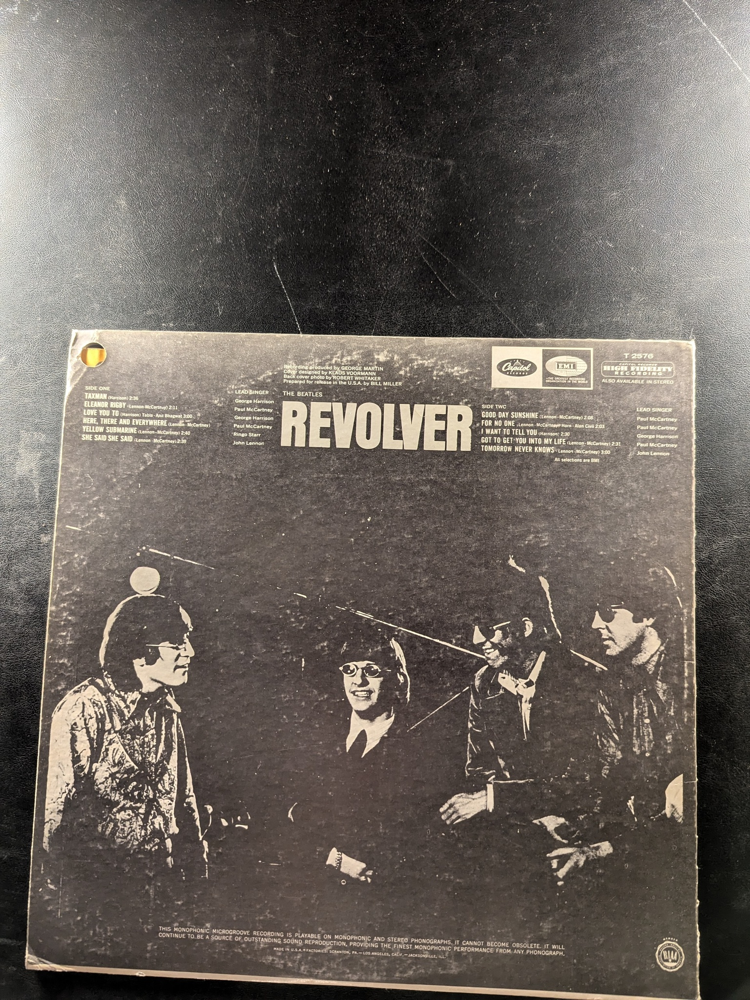Revolver
The Beatles
Capitol Records T 2576
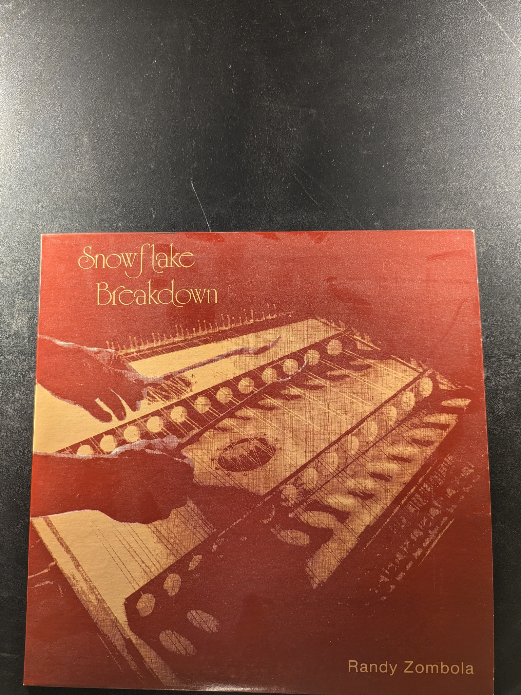Snowflake Breakdown
Randy Zombola
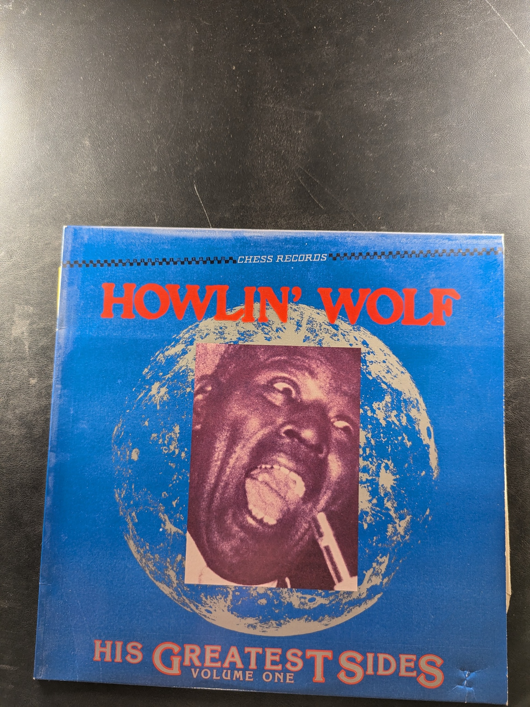His Greatest Sides Volume One
Howlin' Wolf
Chess Records
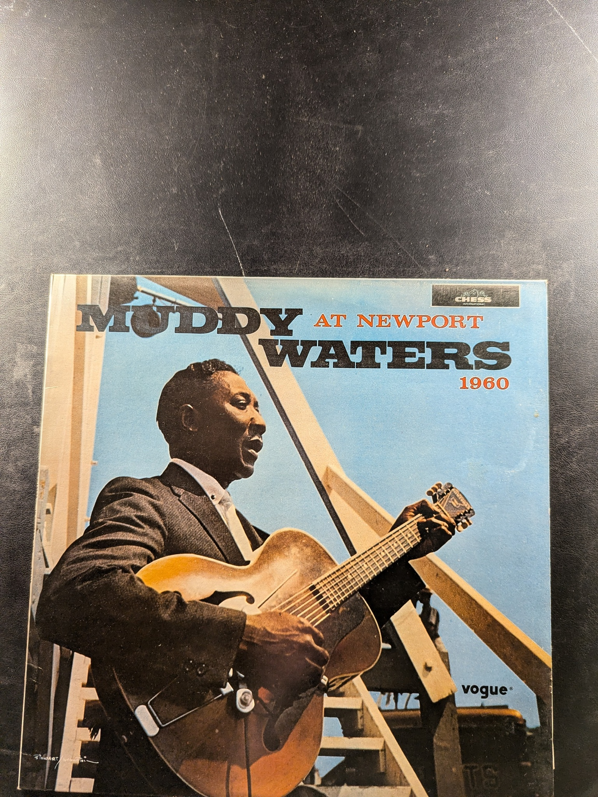At Newport 1960
Muddy Waters
Chess
Atlantic Blues: Chicago
Various Artists
Atlantic
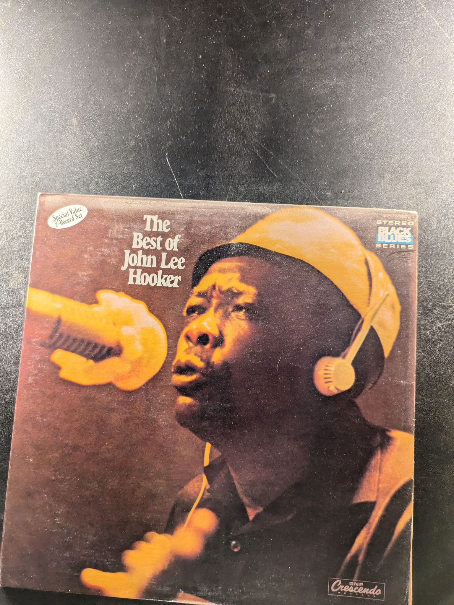The Best of John Lee Hooker
John Lee Hooker
GNP Crescendo
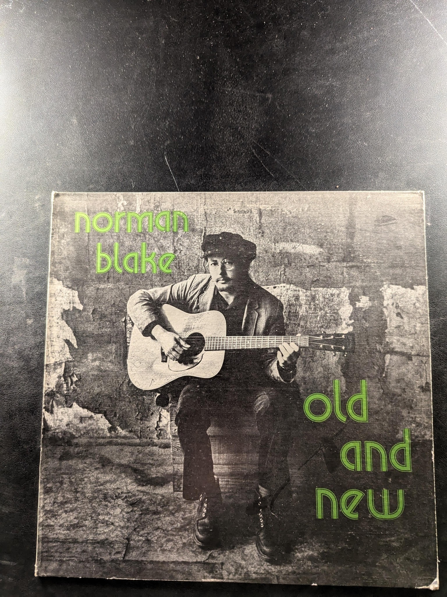old and new
norman blake
Better Times A' Coming
The Reasonable Band

Best Friends
Cleo Laine & John Williams
RCA AFL1-1987
King of the Blues
B.B. King
Crown Records
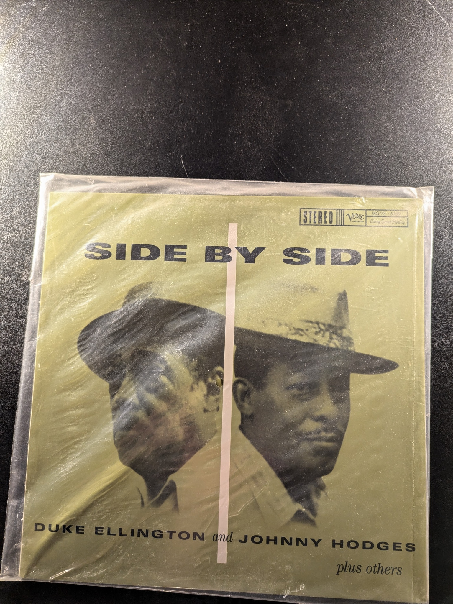Side by Side
Duke Ellington and Johnny Hodges
Verve MGVS-6109
All His Hits
Freddie King
Federal KING-5012X
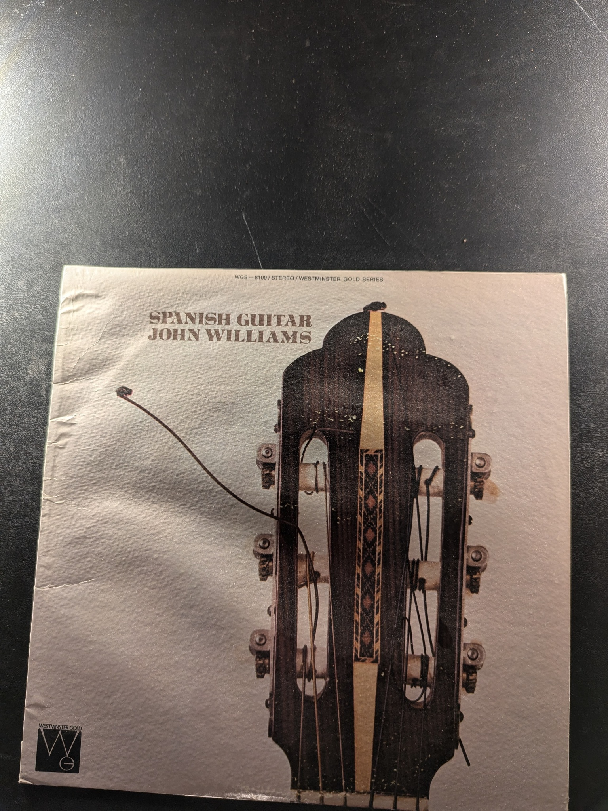Spanish Guitar
John Williams
Westminster Gold WGS-8100
Below the Salt
Steeleye Span
Malicorne
Malicorne
Hexagone 883 006
Now We Are Six
Steeleye Span
{kind=link}
{kind=link}
{kind=link}
{kind=link}
{kind=link}
{kind=link}
{kind=link}
{kind=link}
{kind=link}
{kind=link}
{kind=link}
{kind=link}
{kind=link}
{kind=link}
{kind=link}
{kind=link}
{kind=link}
{kind=link}
{kind=link}
{kind=link}
{kind=link}
{kind=link}
{kind=link}